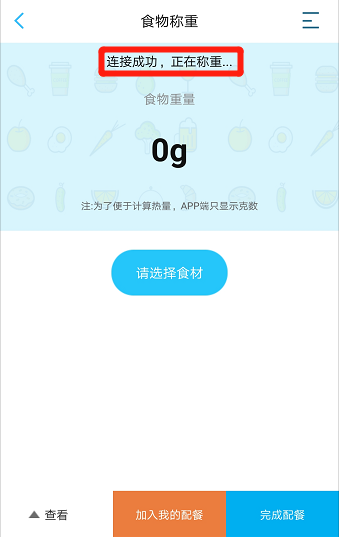

- 打开“渐轻”APP，开启蓝牙， 通过以下两种方式绑定营养秤：
- 进入海尔营养秤绑定界面后, 轻轻按压秤面,待界面显示“已经搜索到智能营养秤，请确认绑定”时， 点击“确认绑定”即完成海尔营养秤与APP的绑定。
- 首次绑定完成后,即可进入食物称重界面；若非首次绑定，需点击首页悬浮图标 进入食物称重界面，待显示“连接成功，正在称重…”即可进行食材称重。 
- 点击‘请选择食材’，选择您要称重的食材，并将该食材放在秤上进行称重，下方会显示该食材的营养成分。
- 点击下方‘加入我的配餐’，若有多种食材则重复上一步骤，注意每种食材每次称重后都要加入配餐，否则系统无法记录数据。
- 配餐结束后，点击右下方‘完成配餐’，进入‘我的饮食’界面，可以看到配餐食材的重量和热量信息。
- 点击下方“饮食分析”可以查看完整的营养分析；
① 未绑定海尔体脂秤的用户，可直接点击首页提示行进行海尔营养秤的绑定；
② 已绑定海尔体脂秤的用户，可直接点击悬浮图标进行海尔营养秤的绑定。

点击下方“生成记录”保存每餐的饮食记录，后期可在历史记录中查看。